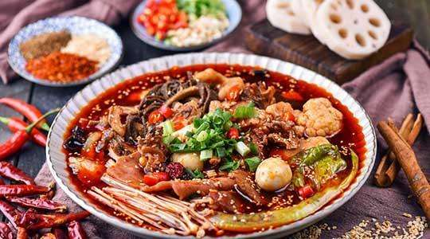
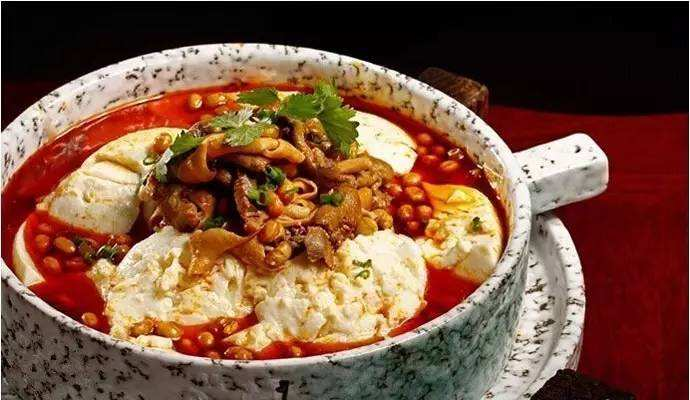
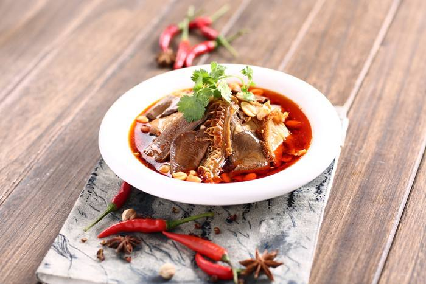
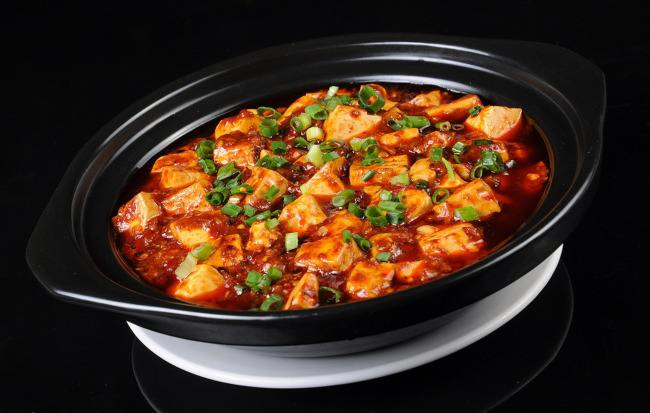

-
冒菜 By Baidu,Link
冒菜是一道以肉类、豆制品、青菜、海鲜、菌菇类作为主要食材制作而成的菜品，起源于成都，具有四川特色的传统小吃。 冒菜最为讲究的吃法为"干碟"，即在小碟中放置干的辣椒粉，加上盐，味精等的调料，将锅里烫好的菜在干碟里轻轻一蘸，然后就可以送进嘴里，味道又香又辣，甚为可口。
-
豆腐花 By Baidu,Link
豆腐花，豆腐花是一种用黄豆制作的小吃，个别的会用豌豆、蚕豆等豆类制作。 将黄豆用水泡涨，磨碎过滤出豆浆，豆浆如果加入盐卤或石膏，就会凝结成非常稀软的固体。
-
夫妻肺片 By Baidu,Link
夫妻肺片，是一道四川成都名菜，由郭朝华、张田政夫妻创制而成。通常以牛头皮、牛心、牛舌、牛肚、牛肉为主料，进行卤制，而后切片。再配以辣椒油、花椒面等辅料制成红油浇在上面。其制作精细，色泽美观，质嫩味鲜，麻辣浓香，非常适口。
-
麻婆豆腐 By Baidu,Link
麻婆豆腐（拼音：má pó dòu fǔ；英文：sauteed tofu in hot and spicy sauce），是四川省传统名菜之一，属于川菜。主要原料为配料和豆腐，材料主要有豆腐、牛肉末（也可以用猪肉）、辣椒和花椒等。麻来自花椒，辣来自辣椒，这道菜突出了川菜“麻辣”的特点。其口味独特，口感顺滑。